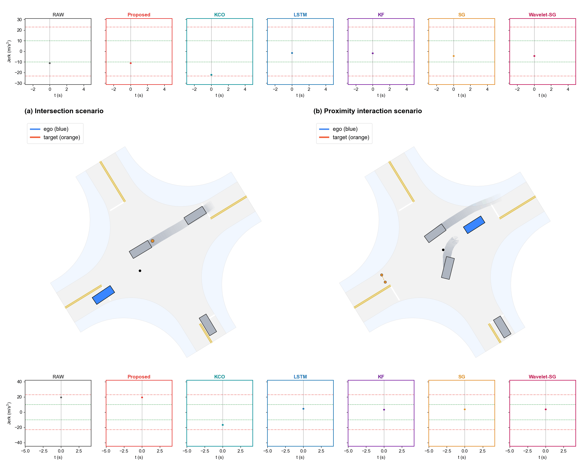
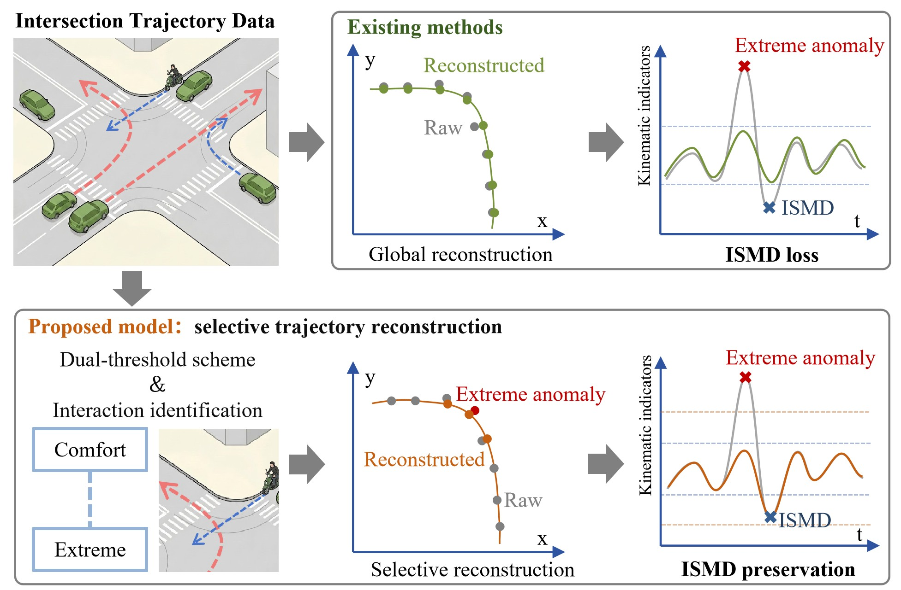
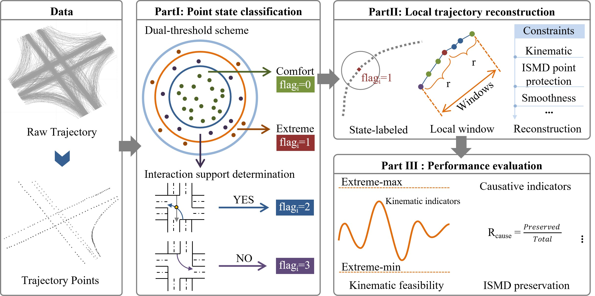
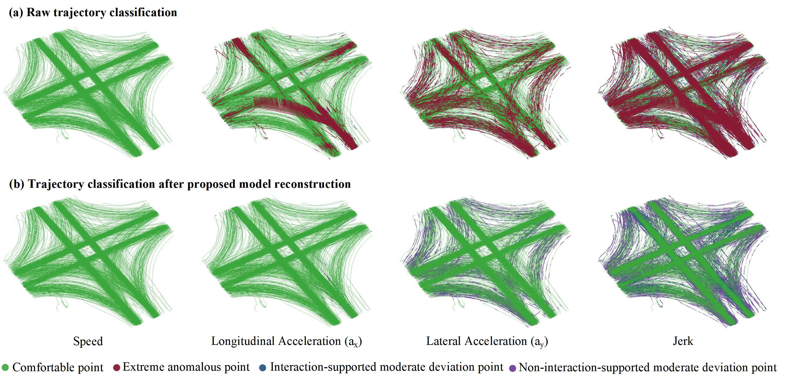
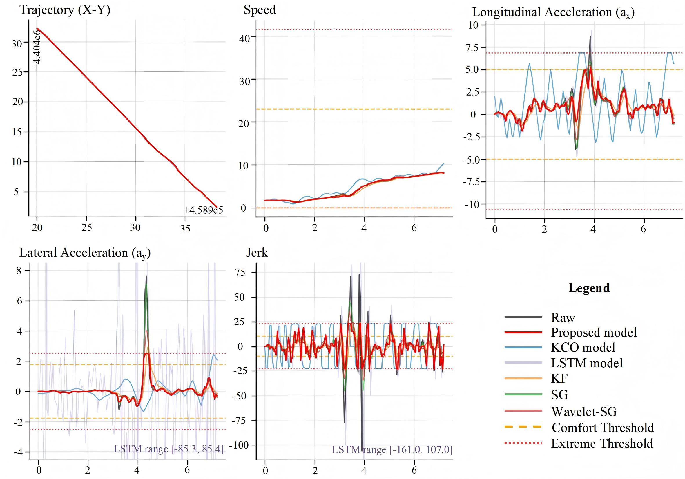
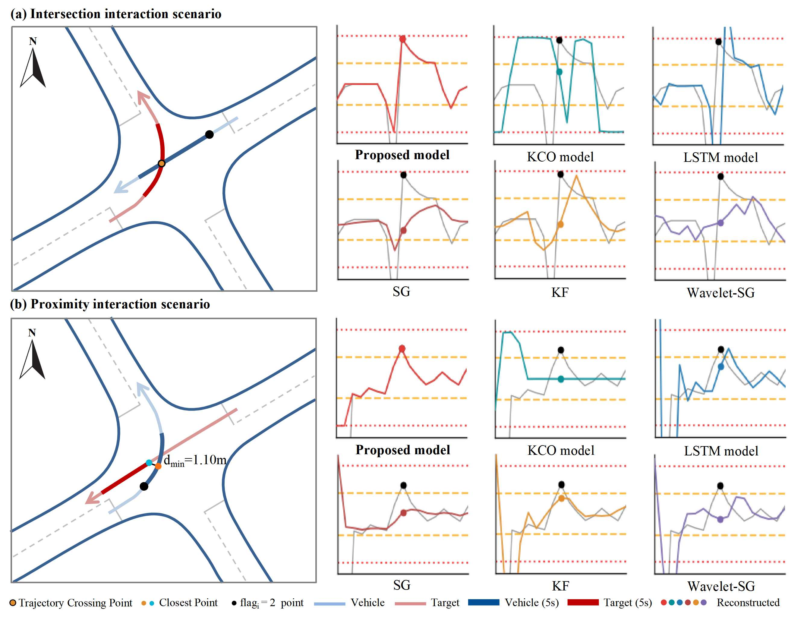

Dynamic Comparison: Preserving Interaction-Supported
Moderate Deviations (ISMD)
When two vehicles interact — one crossing the other's path or passing closely — the involved vehicle briefly adjusts its motion. This adjustment appears as a moderate deviation in the kinematic signal: it exceeds the comfort threshold but remains below the extreme threshold. When such a deviation is driven by a real interaction, it should be preserved during reconstruction rather than smoothed away. The animation aligns both scenarios to the interaction moment (flag = 2) and shows how seven methods handle it: the Proposed model preserves the deviation, while baseline methods smooth it away or distort it.

Intersection & proximity interaction scenarios — per-model layout (7 models × ISMD metric)
How to read it
- Top / bottom rows — seven methods (RAW → Wavelet-SG); each panel plots the vehicle's ISMD-trigger metric (e.g., jerk) around the interaction moment, between the comfort (green) and extreme (red) limits.
- Middle maps — the real trajectories: blue = ego vehicle, orange = interacting target; the black flag = 2 point marks the interaction moment.
- At flag = 2, the Proposed panel keeps the moderate deviation (the curve's spike), while smoothing baselines (LSTM, SG) flatten it.
Abstract
Vehicle trajectory data provide an important basis for traffic research such as driving behavior analysis and conflict identification. However, raw trajectory data collected from sensing systems are often affected by detection and tracking errors, resulting in anomalies such as positional drift and abrupt speed changes. Existing trajectory reconstruction methods often adopt uniform smoothing or global fitting objectives, making it difficult to distinguish measurement-induced anomalous points from interaction-supported moderate deviations (ISMD). Such deviations may represent genuine interaction-induced kinematic responses and should therefore be preserved during reconstruction.
This study proposes a selective constrained optimization model for trajectory reconstruction. The model integrates a dual-threshold scheme with spatiotemporal neighborhood-based interaction identification and develops a locally constrained reconstruction strategy with heterogeneous weight allocation, ISMD point protection, causative indicator preservation, and hierarchical fallback solving. The model was validated using 24 h of roadside perception data from an intersection in the Beijing High-level Automated Driving Demonstration Area, including 13,487 vehicle trajectories and 1,737,147 sampled trajectory points. The results show that the proposed model fully satisfies the four kinematic constraints on speed, longitudinal acceleration, lateral acceleration, and jerk, while achieving a mean Euclidean distance of 0.04 m, a mean closeness rate of 90.78%, an ISMD preservation rate of 93.25%, and a moved point rate of 51.23%.
Method Overview
The model combines a dual-threshold scheme with spatiotemporal neighborhood-based interaction identification, then performs locally constrained reconstruction with differentiated protection for ISMD points.

Method Pipeline
- Point-state classification. Comfort and extreme thresholds screen each point into comfortable, moderate-deviation, or extreme-anomalous states; spatiotemporal interaction identification then determines which moderate deviations are interaction-supported (ISMD), yielding four states (flag 0, 1, 2, 3).
- Local trajectory reconstruction. Local windows around extreme anomalous points are reconstructed under hard kinematic constraints, with heterogeneous weights, ISMD-point protection, causative-indicator preservation, and hierarchical fallback solving.
- Multi-dimensional performance evaluation. Results are evaluated on kinematic feasibility, multi-dimensional closeness, and ISMD preservation.

Multi-model Performance Summary
The Proposed model achieves full kinematic feasibility while maintaining a lower modification magnitude
and a higher ISMD preservation rate than representative constrained optimization, deep learning, and filtering-based baselines.
| Model | Mean D (m) | Moved point rate (%) | ISMD rate (%) | Speed sat.(%) | a_x sat.(%) | a_y sat.(%) | Jerk sat.(%) | Speed closeness(%) | a_x closeness(%) | a_y closeness(%) | Jerk closeness(%) | Mean closeness(%) |
|---|---|---|---|---|---|---|---|---|---|---|---|---|
| Proposed model | 0.04 | 51.23 | 93.25 | 100.00 | 100.00 | 100.00 | 100.00 | 90.32 | 83.39 | 96.72 | 92.69 | 90.78 |
| KCO model | 0.79 | 99.22 | 78.25 | 100.00 | 100.00 | 100.00 | 100.00 | 80.06 | 45.78 | 83.79 | 78.91 | 72.14 |
| LSTM model | 0.15 | 96.12 | 32.05 | 100.00 | 98.45 | 62.52 | 82.91 | 98.66 | 84.26 | -32.79 | 80.50 | 57.66 |
| KF | 0.59 | 99.22 | 14.89 | 100.00 | 99.46 | 97.41 | 96.57 | 96.56 | 84.48 | 94.84 | 89.54 | 91.36 |
| SG | 0.03 | 100.00 | 33.77 | 99.00 | 99.08 | 96.53 | 92.14 | 99.56 | 90.63 | 97.49 | 89.19 | 94.22 |
| Wavelet-SG | 0.07 | 100.00 | 23.67 | 97.27 | 99.19 | 96.83 | 93.92 | 99.26 | 87.64 | 96.27 | 87.91 | 92.77 |
Point-State Distribution Before and After Reconstruction
On 15% randomly sampled trajectories, the Proposed model removes extreme anomalous points across all four kinematic indicators while preserving interaction-supported moderate deviations (ISMD).

Representative Trajectory Reconstruction
A representative vehicle trajectory is used to compare reconstructed positions and derived kinematic indicators across the Proposed model and baseline methods.

ISMD Preservation Examples
Two interaction scenarios illustrate how the Proposed model preserves interaction-supported moderate deviations in both trajectory-crossing and proximity-based interactions.
